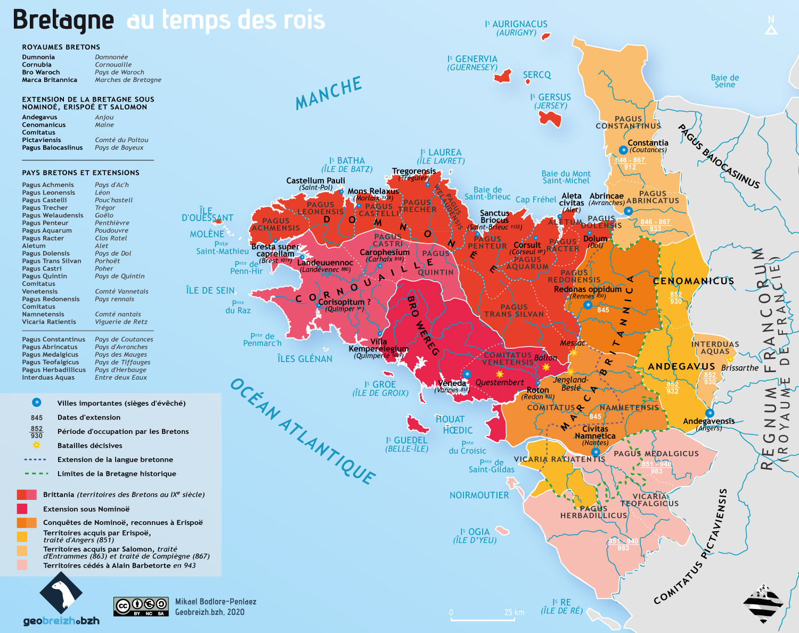

À la fin du VIIIe siècle et au début du IXe siècle, l’espace breton
se caractérise par une fragmentation politique et une autorité
franque intermittente. Les élites locales cherchent à affirmer
leur autonomie face au pouvoir carolingien.

Extension du royaume de Bretagne au milieu du IXe siècle. Carte tirée de Geo